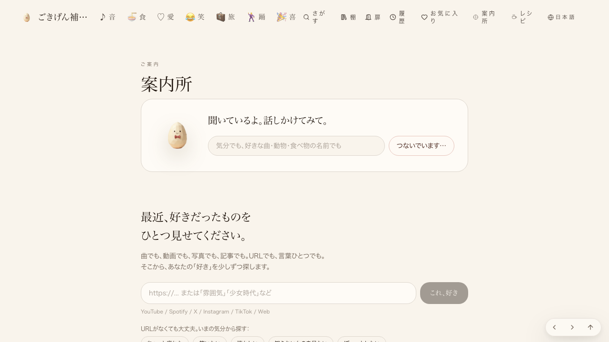

共有資料の一覧 ／ 確認ページ #908 仕組み⑬：人間なしで音声案内の通しテスト（偽マイク）＋別AI検品
#908 仕組み⑬：人間なしで音声案内の通しテスト（偽マイク）＋別AI検品
2026-09-17 実装・main合流・本番(GitHub Pages)反映まで実測確認
店主がマイクで実機テストしなくても、話すボタンを押す→接続→返事、を自動で確認できる仕組みを作った。実際に本番URLへ向けて実行した結果、chrome・braveどちらも『今は声のご案内をお休み中』というフォールバックで止まり、声のご案内(#888)がまだ本番で動いていないという実測を発見した。
② 数字
2/2試した対応ブラウザ(chrome・brave)ともfail
5/5関所スクリプトの逆テスト全緑
③ 実データでのスクリーンショット
クリック前(chrome・ヘッドレス)
クリック後30秒(chrome・接続止まり)
braveクリック前
braveクリック後30秒(接続止まり)
④ 押せるリンク
※前回このページに貼っていた「変更した中身」へのリンクは、たまごさんが開けない非公開リポジトリのURLだったため削除しました。コードの中身はGitHub上（非公開）にあり、たまごさんが確認する場所は上の本番ページだけで足ります。
⑤ 何をどう確かめたか
| 確認項目 | 結果 |
|---|
| 話すボタンを押す(chrome) | 接続(connecting)までは到達 |
| 接続後の返事(chrome) | 『今は声のご案内をお休み中』で停止 |
| 話すボタンを押す(brave) | 接続(connecting)までは到達 |
| 接続後の返事(brave) | 『今は声のご案内をお休み中』で停止 |
| 別AI(Gemini)による検品 | ローカルにAPIキー無しでSKIPPED、代わりに独立tamago-verifierセッションが証拠のみでPASS判定 |
| 関所(証拠が無い/古い/不合格を弾く)の逆テスト5件 | 全部意図通り例外を投げた(緑) |